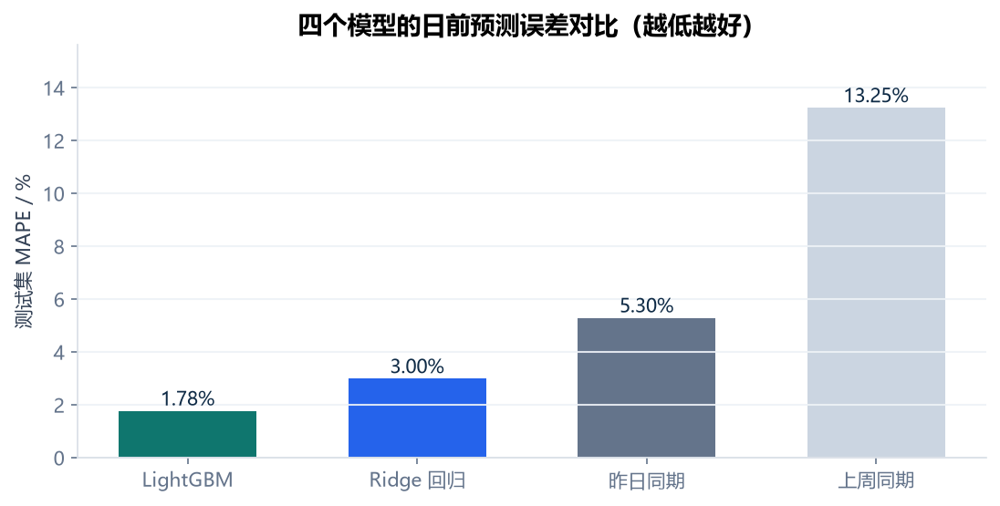
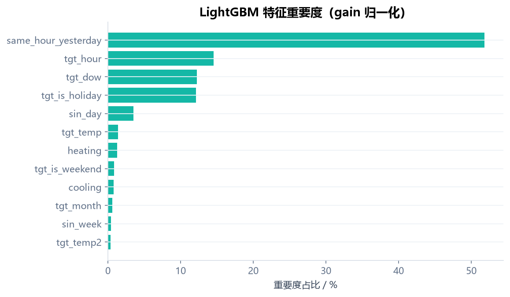

特征工程与负荷预测建模
这一章把“预测明天用多少电”拆成可执行的动作：造哪些特征、怎么防止偷看未来、为什么选 LightGBM、每个超参在调什么、误差到底出在哪。
模型看不懂一条负荷曲线，它只认识一行行数字。特征工程就是把原始数据翻译成模型能用的数字：昨天同一时刻的负荷、目标时刻是周几、预报温度是多少……同一份数据，给模型看什么，决定了它的上限。所以这一章的重点不是调参，而是决定给模型看什么、以及怎么保证这些数字在预测发生时真的拿得到。
先把任务定义钉死
起点：某天 0 点（origin）。输入：0 点之前 7 天的逐时负荷、0 点已知的气象预报、日历信息。输出：未来第 1~24 小时的逐时负荷。训练样本：每个起点 × 24 个 horizon（提前 1~24 小时，共 24 个预测步长），合计 31.1 万条。评估：按起点时间切分，测试集 2024-10-01 之后，5.27 万条样本。
为什么要把 24 个 horizon 摊平成样本？因为这样可以用一个模型同时输出 24 个点，避免训练 24 个模型，也避免递归预测的误差累积。代价是模型要自己学会“不同提前量该依赖什么”——所以 horizon 必须作为特征喂进去。
五类特征：每一类都在解决什么问题
不要一上来就堆特征。先问“这个特征补的是哪块信息”，再决定要不要加。项目一最终用了 25 个特征，正好分五类。
| 类别 | 本项目用到的特征 | 解决什么问题 |
|---|---|---|
| 日历 | tgt_hour, tgt_dow, tgt_month, tgt_is_weekend, tgt_is_holiday, sin_day, cos_day, sin_week, cos_week |
告诉模型“这是几点、周几、是否假期”。正弦/余弦编码让 23 点和 0 点在数值上接近，而不是相差 23。 |
| 滞后 | load_origin, load_lag24, load_lag48, load_lag168, same_hour_yesterday, same_hour_lastweek |
利用自相关：昨天、前天、上周同一时刻的负荷。这是短期预测最强的信号。 |
| 滑动统计 | roll24_mean/std, roll168_mean/max/min |
描述“最近的水平和波动”。最大值/最小值帮助模型判断近期是否出现过极端工况。 |
| 气象 | tgt_temp, tgt_temp2, cooling, heating |
温度的非线性影响。二次项表达 U 形，cooling/heating 直接把“制冷/供暖需求”显式化。 |
| 任务 | horizon |
告诉模型“这是提前几小时的预测”。提前 1 小时和提前 24 小时，可信度完全不同。 |
关键代码：一次生成 24 个 horizon
for h in range(1, 25): f = base.copy() # 以 origin 时刻为索引的滞后/滚动特征 f["horizon"] = h f["tgt_hour"] = cal["hour"].shift(-h) f["tgt_dow"] = cal["dow"].shift(-h) f["tgt_is_weekend"] = cal["is_weekend"].shift(-h) f["tgt_temp"] = temp.shift(-h) # 未来温度：工程上来自预报 f["tgt_temp2"] = f["tgt_temp"] ** 2 f["cooling"] = np.maximum(f["tgt_temp"] - 25.0, 0) f["heating"] = np.maximum(3.0 - f["tgt_temp"], 0) f["same_hour_yesterday"] = y.shift(24 - h) f["sin_day"] = np.sin(2 * np.pi * f["tgt_hour"] / 24) f["cos_day"] = np.cos(2 * np.pi * f["tgt_hour"] / 24) f["y"] = y.shift(-h) # 标签：未来第 h 小时 frames.append(f)
代码里 temp.shift(-h) 用的是实际温度，相当于假设气象预报完全准确。真实系统里你拿到的是预报值，会带 1~2°C 误差，MAPE 通常要上浮 0.3~1.0 个点。面试被问“你的模型上线能到这个数吗”，必须主动承认这一点，并说明你会怎么验证（用历史预报回测）。
防泄漏：写特征时的五个自检
这个数在 origin 时刻存在吗？
所有 shift(-k) 的目标侧信息只能来自“预报/计划”，不能来自实测。日历可以，实测负荷不行。
滚动窗口是否包含当前点？
y.rolling(24).mean() 包含 origin 本身；因为 origin 已经发生，这样算不算泄漏。但项目里更保守，统一用 y.shift(1).rolling(...)，只用 origin 之前的点，避免边界处理出错。
标准化参数是否只用训练集算？
Ridge 管道在训练集上 fit，测试集只 transform。树模型不需要标准化，但也不能用全量统计做分箱。
切分单位是不是“起点”？
同一次预测的 24 个样本必须待在同一边，否则相邻 horizon 会互相泄漏。
缺失填充有没有用到未来？
bfill() 会用后一个值填前面，属于轻度泄漏。项目里只在尾部兜底使用，且影响样本极少，但要能说清。
模型家族：从朴素基线到 LightGBM
永远先跑基线。基线的作用不是“凑数”，而是给你一个“不做机器学习能到什么水平”的参照。
| 模型 | 原理一句话 | 在本项目的表现（测试集） |
|---|---|---|
| 昨日同期 | 直接拿昨天同一时刻的值当预测 | MAPE 5.30%，MAE 17.07 MW。出奇地强，说明日周期占主导 |
| 上周同期 | 拿上周同一天同一时刻的值 | MAPE 13.25%。周末/天气错位导致明显偏差 |
| Ridge 回归 | 线性模型 + L2 正则，用全部 25 个特征 | MAPE 3.00%，MAE 9.77 MW。能学到线性关系，但学不出 U 形与交互 |
| LightGBM | 梯度提升树，逐棵拟合残差 | MAPE 1.78%，MAE 5.76 MW，RMSE 7.25 MW，最佳迭代 183 |
| ARIMA | 用历史序列的自相关结构外推 | 适合单序列短期，难以吃进气象/日历等多源特征；24 步长需递归，误差累积 |
| Prophet | 趋势 + 季节 + 节假日分解 | 上手快、可解释；对突变和精细化气象响应弱于树模型 |
Ridge：给每个特征配一个权重，所有影响直接叠加，所以只能表达线性关系；“L2 正则”是给权重加一点“罚款”，防止某个特征权重过大、把历史噪声也背下来。LightGBM：一棵树做一次判断，下一棵树专门修正上一棵树的错误（残差），几百棵接力，于是能学出“温度高于 26℃ 才明显开空调”这种非线性与交互。孤立森林（第 5 章）：随机切几刀，很快被单独切出来的点就是异常。

要，但要知道它们的边界。ARIMA 在“只有一条序列、样本短、需要统计检验”时很好用；Prophet 在“快速给出可解释的趋势与节假日效应”时很高效。本岗位写的是“scikit-learn, ARIMA/Prophet”，面试可能问“你为什么不用 Prophet”。答案不是“它不好”，而是“本任务有多源特征和 24 步输出，树模型更合适；我用 Prophet 做过基线，MAPE 约 X%”。
LightGBM：每个超参在调什么
| 参数 | 本项目取值 | 作用与调法 |
|---|---|---|
n_estimators | 2000 | 树的数量上限。配合早停，实际只用了 183 棵 |
learning_rate | 0.04 | 每棵树的学习率。越小越稳但需要更多树；0.03~0.1 是常用区间 |
num_leaves | 96 | 单棵树复杂度。越大拟合能力越强，也越容易过拟合 |
min_child_samples | 40 | 叶子最小样本数。防止对少数样本过拟合 |
subsample / colsample | 0.9 / 0.9 | 行/列采样，增加随机性、降低过拟合 |
reg_lambda | 1.0 | L2 正则 |
| 早停 | 100 轮 | 验证集 100 轮不提升就停，避免无效训练 |
① 先固定 learning_rate=0.05、num_leaves=31 跑通；② 用早停确定树数；③ 调 num_leaves（31 → 63 → 96）；④ 加 min_child_samples 抑制过拟合；⑤ 最后微调采样与正则。先改特征，再调超参——特征带来的提升通常远大于超参。
特征重要性说明了什么

load_origin 重要，是因为负荷自相关强；它不代表“只要知道当前负荷就能预测”。重要性只用于排查“哪些特征没被用上”，不用于业务解释。消融实验：特征不是越多越好
这是本项目最值得讲的部分，因为它和“堆特征”的直觉相反。我删掉整类特征重新训练，结果如下。
口径说明：消融使用独立的固定配置（上限 800 棵、learning_rate=0.05、num_leaves=64、早停 60 轮），与主模型的 2000 棵 / 0.04 / 96 叶 / 早停 100 轮不同，所以 full 的 MAE 5.78 与主结果 5.76 差 0.02。这只影响绝对值，不影响“同一配置下各变体之间的比较”。
| 变体 | 特征数 | MAPE | MAE | 解读 |
|---|---|---|---|---|
| full（全量） | 25 | 1.78% | 5.78 | 基准 |
| no_weather | 21 | 2.22% | 7.24 | 去掉气象明显变差 → 气象确实有用 |
| calendar_only | 10 | 2.10% | 6.82 | 只用日历，仍能到 2.1%，说明形态规律强 |
| no_lag_rolling | 16 | 1.74% | 5.63 | 去掉滞后滚动，反而略好 |
| no_recent_day | 24 | 1.66% | 5.38 | 去掉“昨日同期”，居然更好 |
| no_horizon | 24 | 1.79% | 5.80 | 影响很小 |
两个原因：① 冗余。same_hour_yesterday 与 load_lag24、roll24_mean 高度相关，模型在有限数据上会学到噪声。② 稳定性。昨日同期在异常日（节假日、设备检修）会给出错误锚点，反而误导模型。
这不是说“特征无用”，而是说：加特征必须用验证集证明它有用，不能凭直觉。这个结论我保留在教程里，因为真实项目经常出现，而且面试官很吃这一套。
消融是在同一份数据、同一套超参下做的，只说明“在这份仿真数据上”。换城市、换季节、换测点层级，结论可能反转。正确表述是“我在本数据集上做了消融，发现……”，而不是“昨日同期特征没用”。
误差分析：模型错在哪
指标只告诉你“错了多少”，误差分析告诉你“为什么错、下一步改什么”。
按小时看
本项目 05:00 的 MAPE 最高（2.18%），09:00~11:00 最低（1.38%~1.46%）。夜间基数小，百分比被放大；白天规律稳定。
按步长看
horizon 1 到 24 的 MAPE 几乎持平（1.80% → 1.78%）。说明模型不是靠“最近值”硬撑，而是真的学到了形态。
按月看
10 月 1.89%、11 月 1.68%、12 月 1.75%。10 月含国庆假期，节假日样本少，是主要误差来源。
“昨日同期”基线随 horizon 变大而误差略降（5.41% → 5.17%），因为提前越久，目标时刻越接近“昨天同一时刻”的相位。而 LightGBM 几乎不随 horizon 变化（1.80% → 1.78%），说明它已经把 horizon 信息用起来了。这个细节可以在面试中展示你对数据的理解深度。
模型保存：别只存模型文件
# 保存 joblib.dump({"model": model, "features": FEATURES}, ART / "model.joblib") # 加载：一定要按保存时的列顺序重排 bundle = joblib.load(ART / "model.joblib") X = df[bundle["features"]].astype(float) pred = bundle["model"].predict(X)
LightGBM 按列位置读特征。如果上线时列顺序变了，模型不会报错，但会给出完全错误的结果——这是最隐蔽的线上事故之一。所以模型包里必须带特征名列表，并在推理前做断言校验。
想让预测支撑决策，继续读 专题 B3 · 预测算法进阶：概率预测、Conformal 区间、层级对账、Optuna 调参与漂移重训。
常见问题
Q1：为什么不用 LSTM / Transformer？
Q2：24 个 horizon 一起训练，会不会互相干扰？
horizon 作为特征能让模型自己区分。另一种做法是训练 24 个独立模型（或分 4 个模型各管 6 小时），代价是训练成本高、样本少时更容易过拟合。本项目选择了单模型 + horizon 特征，效果可接受。Q3：节假日样本很少，怎么处理？
Q4：线上没有真实温度怎么办？
Q5：MAPE 1.78% 是不是太好了，不真实？
自测
- 说出五类特征，并各举一个本项目里的列名。
- 为什么
horizon必须作为特征？ - 举出三种数据泄漏，并说明怎么避免。
- LightGBM 的
num_leaves和min_child_samples分别在控制什么？ - 消融实验里“去掉昨日同期反而更好”，你怎么解释？
- 如果线上特征列顺序变了，会发生什么？怎么防？